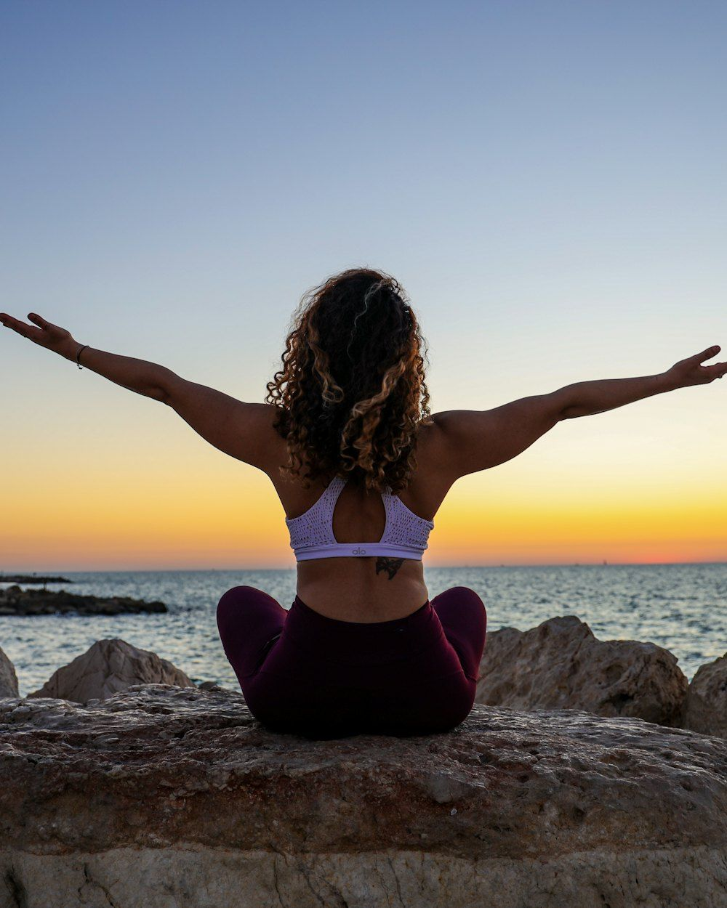

●Consultorio en Palermo · Lic. Tomás Rivero
Volvé a
correr
sin dolor.
Kinesiología uno a uno: sesiones de 45 minutos, siempre con el mismo profesional, y un plan de ejercicios para tu casa.
- 45minutos por sesión
- 12años con columna
- 1.200pacientes atendidos

¿Dónde te duele?
Tocá la zona y te contamos qué suele pasar, cuántas sesiones lleva y te armamos el turno.
En general, de un total de hasta 12. Lo ajustamos en la primera sesión.
Qué tratamos
La primera sesión es una evaluación: vemos cómo te movés, qué te duele y armamos el plan.
Lic. Tomás Rivero
Kinesiólogo y fisiatra por la UBA, especializado en columna y deporte. Trabajó 8 años en rehabilitación en un club de primera división antes de abrir Eje.
Atiende a cada paciente de principio a fin. No vas a contar tu historia dos veces.
- Terapia manual
- RPG
- Ejercicio terapéutico
- Punción seca
¿Con qué cobertura venís?
Elegí la tuya y te decimos qué necesitás traer.
Tocá tu obra social o prepaga.
Carolina, 38 · lumbalgia“Llegué sin poder atarme las zapatillas. A la quinta sesión volví a correr.”
Martín, 45 · cervicalgia“La rutina para la casa me cambió todo. Quince minutos y no me volvió el dolor.”
Julieta, 27 · rodilla“Tomás habló directo con mi traumatólogo. Todo coordinado.”
Pedí tu turno
Elegí día y horario. Te confirmamos por WhatsApp dentro de las 2 horas hábiles.
- Día
- Horario
- Tus datos
Día
Horariosesión de 45 min
Tachado = ocupadoVioleta = el tuyo
Tus datos
Elegí un día y un horario.